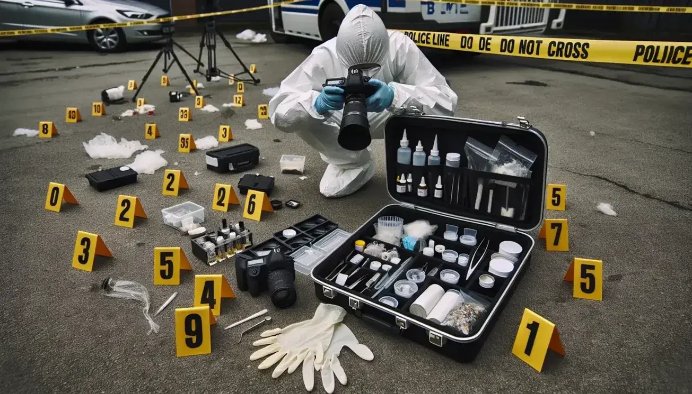
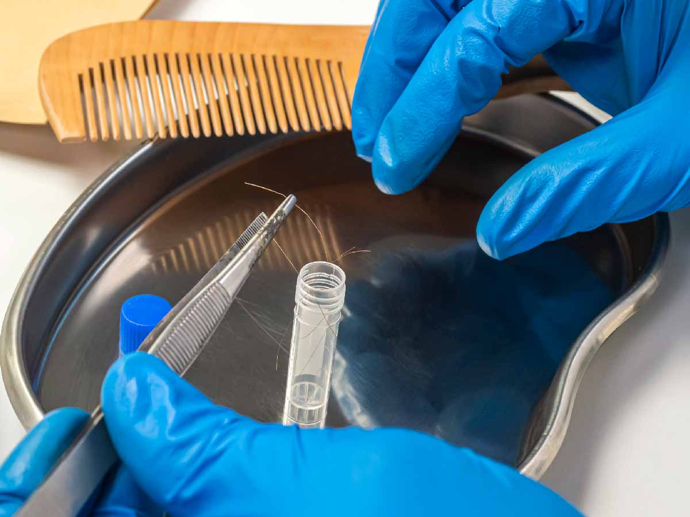

Pasos en la Escena del Crimen
Cuando ocurre un hecho delictivo, el tiempo es el peor enemigo de los investigadores. Existe una regla no escrita que dice que las primeras 48 horas son cruciales; si no se obtienen pistas sólidas en ese tiempo, la probabilidad de resolver el caso disminuye drásticamente.



El primer paso siempre es la protección y acordonamiento del lugar. Los primeros policías en llegar, conocidos como primeros respondientes, deben asegurar el área con cinta amarilla para evitar que curiosos o el clima destruyan la frágil evidencia.
Una vez asegurada el área, entra el equipo de criminalística para la "fijación" del lugar. Esto significa documentar todo exactamente como se encontró, utilizando fotografías, videos y planos dibujados a mano (croquis). Nada se toca hasta que ha sido fotografiado desde múltiples ángulos.
El siguiente proceso es la recolección de indicios. Usando guantes, pinzas y trajes especiales, los peritos levantan armas, cabellos, fluidos o documentos. Cada elemento se empaca en bolsas de papel o plástico, dependiendo de su naturaleza, y se sella de forma segura.
Finalmente, toda esa evidencia es enviada al laboratorio para su análisis científico, mientras que los investigadores de campo comienzan a interrogar a los testigos basándose en la información que los peritos les van proporcionando.
Fases Principales:
- Protección del lugar
- Fijación (Fotografía y Planimetría)
- Recolección y Embalaje
- Traslado al laboratorio